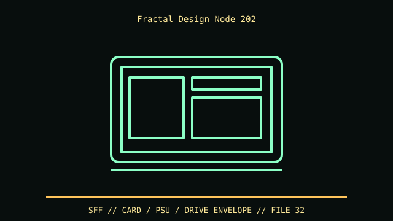

[ IDENTIFIED ENCLOSURE // NODE 202 SLIM CONSOLE ENCLOSURE (CASE-ONLY VARIANT) ]
Fractal Design Node 202
377 × 82 × 330 mm (W × H × D) desktop orientation; GPU up to 310 × 145 × 47 mm and CPU cooler up to 56 mm.

VARIANT / ARCHIVAL CAVEAT: Node 202 case-only vs Node 202 with integrated PSU variants; PSU harness and riser bundle differ. Preserve removable GPU chamber filter and stand feet.
Mechanical specifications and fit
| Catalog identity | Node 202 slim console enclosure (case-only variant) |
|---|---|
| Dimensions and clearances | 377 × 82 × 330 mm (W × H × D) desktop orientation; GPU up to 310 × 145 × 47 mm and CPU cooler up to 56 mm. |
| Drive bays / mounts | Two 2.5-inch drive mounts; no 3.5-inch bay. |
| Board, system and compatibility | Mini-ITX and SFX PSU only; discrete GPU requires included riser and the 2-slot/47 mm envelope. Node 202 bundled system version includes PSU and differs from bare case. |
| Revision / identification | Node 202 case-only vs Node 202 with integrated PSU variants; PSU harness and riser bundle differ. Preserve removable GPU chamber filter and stand feet. |
Preservation and installation notes
Node 202 case-only vs Node 202 with integrated PSU variants; PSU harness and riser bundle differ. Preserve removable GPU chamber filter and stand feet.
Mini-ITX and SFX PSU only; discrete GPU requires included riser and the 2-slot/47 mm envelope. Node 202 bundled system version includes PSU and differs from bare case.
- Capture the complete model/SKU, serial/date label, board assembly and bay/backplane/riser identifiers before disassembly; keep matched screws, trays, carriers, feet and cables with the case.
- Check the cited manual's specific build option before transferring hardware. Published maximum GPU, drive, fan or radiator capacity may not be simultaneous when a removable cage or alternative riser occupies that volume.
- For rack and vintage systems, preserve the exact rails, shields, doors, brackets and model-specific safety instructions; do not infer compatibility from a familiar brand or physical connector shape.
Manufacturer manuals and archival sources
- Fractal Design Node 202 product specificationPrimary manufacturer or model-specific technical/manual reference used for the identification and mechanical data above.
- Fractal Design Node 202 manualSecond product manual, manufacturer resource or established technical archive; choose the exact regional SKU and revision.
When exact dimensions depend on configuration, the text says so; verify the measured specimen before making a fit or restoration decision.